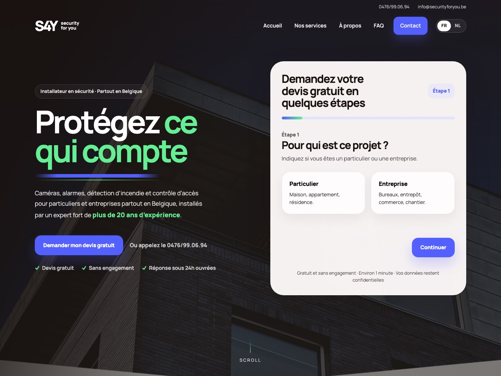

S4Y (Security4You) is een Belgische installateur van camera's, alarmen, branddetectie en toegangscontrole, met meer dan 20 jaar ervaring. Voor hen ontwierp en bouwde ik een tweetalige website met één duidelijk doel: bezoekers zo eenvoudig mogelijk een gratis offerte laten aanvragen.

Security4You werkt voor particulieren én bedrijven, in heel België. De website moest vertrouwen wekken bij mensen die hun huis of zaak willen beveiligen, en hen zonder omwegen naar een offerteaanvraag leiden. Twee doelgroepen, met elk andere vragen:
Een huis of appartement beveiligen, zonder technische kennis. Ze willen weten wat mogelijk is en wat het kost.
Kantoren, magazijnen, winkels en werven. Ze zoeken een betrouwbare partner en een oplossing op maat.
Het hart van de site is een offerteformulier in stappen, meteen zichtbaar bovenaan de homepage. In plaats van één lang formulier stelt het één vraag per keer, in ongeveer een minuut, en het past zich aan aan wie je bent.
Een voortgangsbalk toont waar je zit. Bij het versturen opent een vooraf ingevulde e-mail met alle antwoorden. Opent je mailprogramma niet, dan krijg je meteen het telefoonnummer en e-mailadres als alternatief.
De hele site werkt in het Frans en het Nederlands, met een taalschakelaar in de navigatie.
Cijfers over ervaring en installaties, partners en certificaten, en een helder stappenplan: van aanvraag tot installatie.
Telefoon en e-mail bovenaan elke pagina, en op mobiel een vaste balk om meteen te bellen of een offerte te vragen.
Daarnaast: vier diensten (camera's, alarmen, branddetectie, en toegangscontrole & parlofonie), elk met een eigen knop naar het formulier, een FAQ en de nodige juridische pagina's.
Ik bouwde de site met de hand in HTML, CSS en JavaScript. Het formulier, de vertakkende stappen, de taalwissel en de animaties zijn allemaal eigen code. De site draait op Vercel.
Alles op de site leidt naar dezelfde actie. Die focus maakt keuzes in design en tekst veel makkelijker.
Eén vraag per keer, een voortgangsbalk en de persoonlijke gegevens pas op het einde: zo voelt een lange vraag licht aan.
Teksten verschillen in lengte tussen Frans en Nederlands. Een layout moet dat opvangen zonder te breken.
Toegankelijke website voor slechtziende gebruikers — prototype.